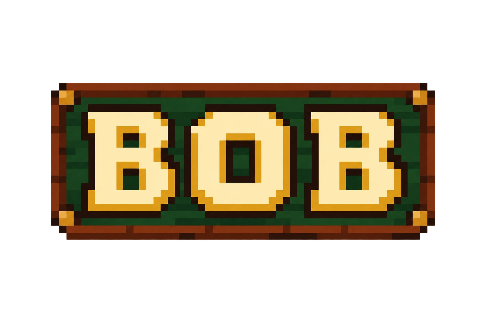

A cup of tea
Global Health and Development at HKU. St. John’s College. Curious, across disciplines.

Shen RuililinYOU CAN CALL ME BOB✦ WELCOME TO BOB’S ROOM
Health, climate, code, and the scenic route.
Come in, wander a little, and follow your curiosity.
Tap an object to explore.
✦ An imaginary room. Real stories. No particular order.
I’m Shen Ruililin, a Global Health and Development student at HKU, a Tung Ngai Foundation Scholar and a Laidlaw Scholar. Here are a few of the paths I’m following.
Global Health and Development at HKU. St. John’s College. Curious, across disciplines.
Studying extreme heat and cardiovascular admissions among older adults in Hong Kong as a Laidlaw Scholar.
Temple of Cement — 2026 City Literary Awards. Threads of The Earth’s Song — 2024 Hong Kong Young Writers Awards.
GraphCast integration at HKO and PolyU. Atmospheric-river identification presented at AGU.
Wu Zhi Qiao rural health and infrastructure service in Macha, Gansu; a water-scarcity study with more than fifty residents.
Shanghai, Singapore, and Hong Kong — I’ve lived for years in each. A Nordic postcard sits on the sill, too.
Mountains, the sea, and a few moments from Suomenlinna. Real photographs from the wider world.
Quantum circuits, MEDocGPT, and a new pixel experiment called Crossing Lives.
A pause along the way. There’s no clock to beat and no right route through the room.
Duoji, my mini black Shiba Inu. The name is inspired by Boji from Ranking of Kings — a small body can hold a lot of power.